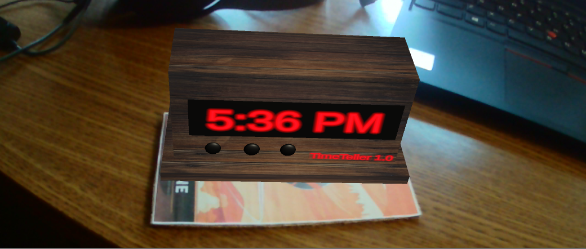
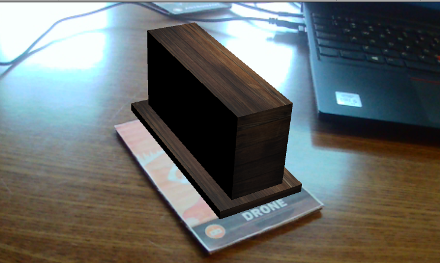
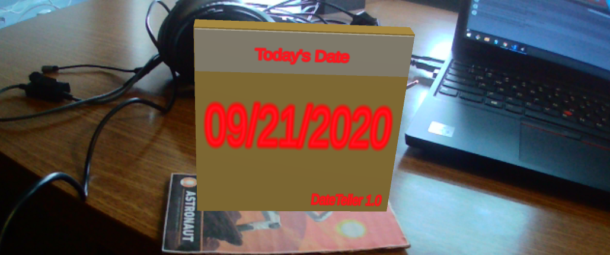
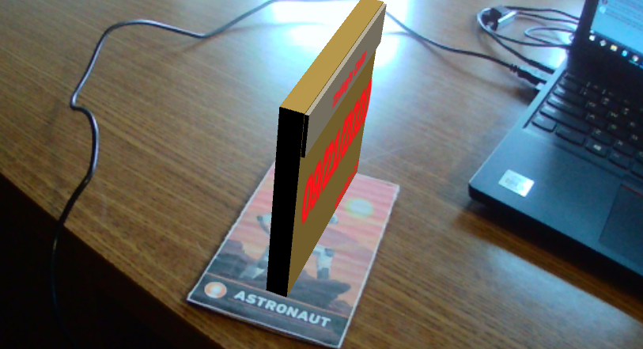
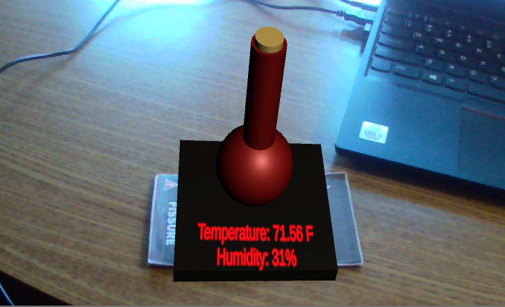
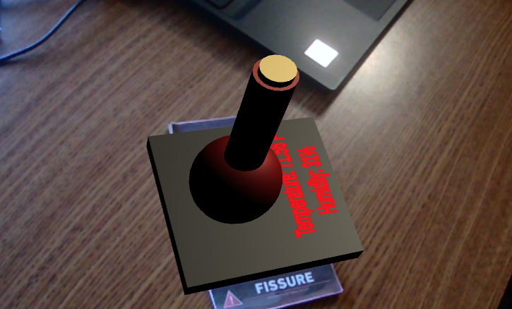
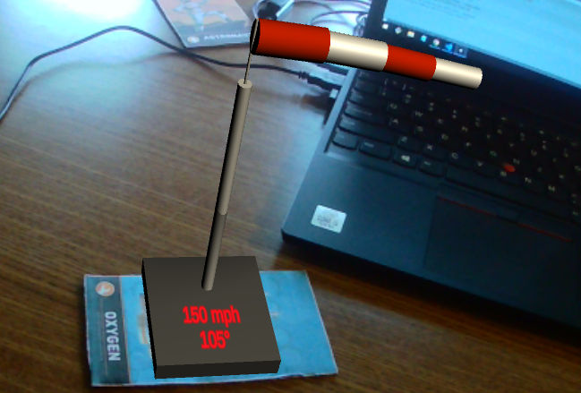
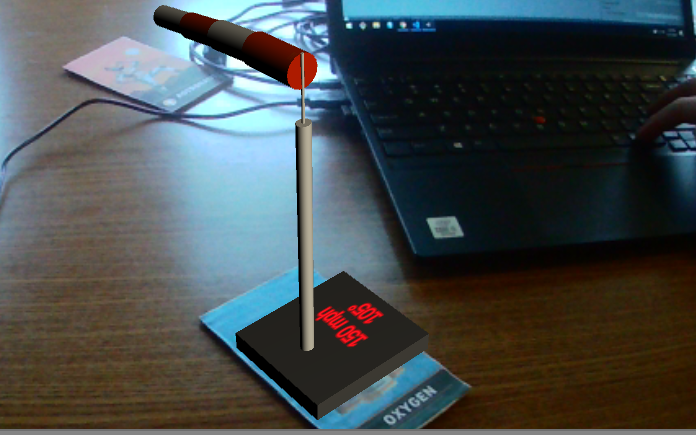

This will be the website used to post every project created in this course. I am expecting an exciting and fresh expereience to a different side of development with Unity. I do not have a strong background in C# nor have I ever played with Unity or tested it our prior to this course. Everything I learn will be broken down into projects and futher broken down as their own tabs. Feel free to look around, check out my work, and reach out to me if you have any questions!
Welcome! Today, I will be taking you through some very awesome augmented realities! From checking the time to the temperature outside, you will be able to see these things without having to Google it!
Details:
This project is created using Unity version 2019.4.1. In it we use the Vuforia Engine which is an augmented reality software development kit for mobile devices. While it enables the use of augmented reality applications on mobile phones, it also uses computer vision technology to recognize and track the 3D objects in real time as used in this project. In order to run this project, simply click the link here to get full access to the files. Simply download, open Unity, and run the project. You should have a webcam on your computer in order to be able to see everything. One quick note regarding some of the objects is that you will need to sign-up for free at openweathermap in order to generate your own API key. This will allow you to get relevant data to your surrounding via a JSON file that one of the scripts I created in the Unity project reads.
What you can expect from this project:


As you can see, the alarm clock will tell you the hour and seconds as well as AM or PM. The alarm clock refreshes every 30 seconds (this could be changed within the script).
Next, we have the calendar. The script refreshes every 30 seconds (although this frequency isn't necessary given the amount of seconds in a day).


Now, for the more complicated and exciting thing. Using an API, we can get access to a JSON file that tells us what the weather is like outside. In this object, we can see the temperature as well as the humidity outside. A brief rundown as to how this all works can be see in the video.


Last, we have a windsock that [is supposed to] show you how windy it is outside and in what direction the wind is blowing. Of course, it is not 105 mph winds as the picture shows, but the API takes data from the wind catagory of the JSON file and checks to see where the range of wind degree falls under and then simply prints out the direction instead of the degree.


Get Unity Project 1 Files Here
My Thoughts on Augmented RealityThis is a placeholder. Check back soon!
This is a placeholder. Check back soon!